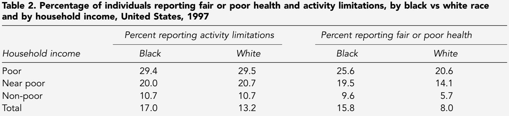

Residential segregation is a major cause for many of the socioeconomic disadvantages African Americans face today. What I read this week talked about the differences between low socioeconomic status(SES), and high SES. Health, job opportunities, and education are all affected by residential segregation.
The correlation between SES and health was the most intuitive for me. Less money means fewer doctor visits, trouble paying for medicine or medical care, etc. In the image below, we can easily see the correlation between SES and health.
[1]You can also see there is a correlation between race and health, so we conclude that SES isn't the only cause for this difference in health.
Along with the purely financial side of living in a lower income area, there are also come less obvious reasons why lower income can mean lower health. It's shown that low income areas are more heavily targeted by sellers of alcohol and tabacco products.[2] We know these products are often used as coping mechanisms, or escapes from stressors that would be caused by living in a low income area.
Businesses often do not want to build in low SES communities, and there is little incentive to push them that direction. This creates a negative feedback loop of jobs moving out of low SES areas, creating more poverity and inequality throughout the country. Businesses leaving an area leads to fewer jobs, more crime, and reinforces the negative stereotypes of low SES areas.
Education is one of the most important socionomic aspects of an area. The way to lift a low SES area out of poverty, is to provide better education. Unfortunately we know education faces many of the same issues Job Opportunities do.